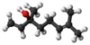

linalool

Definition: Linalool () refers to two enantiomers of a naturally occurring terpene alcohol found in many flowers and spice plants. Linalool has multiple commercial applications, the majority of which are based on its pleasant scent (floral, with a touch of spiciness). A colorless oil, linalool is classified as an acyclic monoterpenoid. In plants, it is a metabolite, a volatile oil component, an antimicrobial agent, and an aroma compound. Linalool has uses in manufacturing of soaps, fragrances, food additives as flavors, household products, and insecticides. Esters of linalool are referred to as linalyl, e.g. linalyl pyrophosphate, an isomer of geranyl pyrophosphate.The word linalool is based on linaloe (a type of wood) and the suffix -ol. In food manufacturing, it may be called coriandrol.
Source: Wikipedia
Wikipedia Page
Wikidata Page